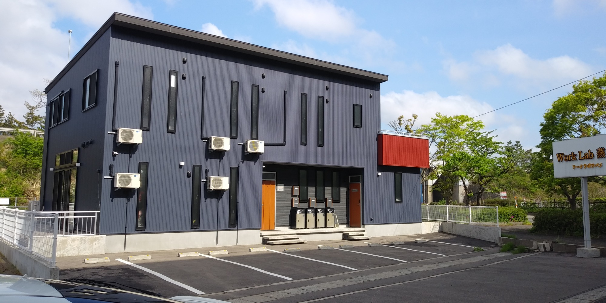

1
毎月貴社を訪問
毎月訪問により、経営者が自社の正確な月次損益を把握できるようにご支援します。
経営者の意思決定に役立つ情報、黒字決算につながる情報をご提供します。
ビジョン・経営計画の策定を、新潟県燕市の税理士法人いろは会計 燕事務所が支援します。月次巡回監査と自計化システムの導入で、経営者の意思決定に役立つ情報を、確かな形でお届けします。
当事務所では、会計（月次試算表・決算書作成）及び税務（申告書作成）を基本業務とし、経理業務効率化（ＤＸ）、経営計画の策定（目標設定・経営課題の明確化）、財務戦略（資金計画・資金調達）を支援します。
毎月訪問により、経営者が自社の正確な月次損益を把握できるようにご支援します。
経営者の意思決定に役立つ情報、黒字決算につながる情報をご提供します。
黒字決算を実現するためには、月次決算を徹底し、タイムリーに会社の業績を把握する必要があります。
クラウドによる日々の迅速・正確な経理体制の構築と管理会計の導入をご支援します。
経営者の「夢の実現」に向けて、経営計画の策定をご支援します。
予算に対する実績の進捗状況を経営者と一緒に確認し、経営計画策定に基づく業績管理体制の構築をご支援します。
毎月、貴社を訪問し巡回監査を実施します。巡回監査により、経営者は自社の正確な月次損益を把握できるようになり、経営者の意思決定に役立つ情報、業績向上につながる情報を入手できます。
クラウドシステムの導入・活用により、経理業務の効率化を図ります。黒字決算を実現するためには、月次決算を徹底し、タイムリーに会社の業績を把握する必要があります。
経営計画の策定と業績管理体制（ＰＤＣＡ）の構築を支援します。業績管理のためには、毎月の目標（予算）を設定することが必要です。
創業の夢をお手伝いします。「自分の店を持ちたい」「事業で成功したい」という、夢の実現をお手伝いします。創業計画作成のサポート、創業後の経営サポートをさせていただきます。
円滑な事業承継をご支援します。事業承継を行うためには事前の準備が大切です。国が講じている中小企業の事業承継支援策を最大限活用することで、スムーズな事業承継の実現につながります。１００年企業を目指しましょう。
円満な相続をサポートします。相続は、相続税対策をはじめ、様々な手続きが必要となりますが、大半の人が初めての体験で、何をしたらよいのか分からず困ってしまうのではないでしょうか。
夢をカタチにするためのパートナーでありたい。
私たちは、起業家や中小企業の挑戦を会計・税務の側面から支え、成長の礎を共に築くことを使命としています。わかりやすさと寄り添う姿勢を大切に、一歩先を見据えたアドバイスを提供します。
私たちのビジョンは、すべてのクライアントにとって「なくてはならない存在」になることです。
クライアント一人ひとりの経営課題に深く寄り添い、長期的な成長をサポートし続けます。クライアントの成功が私たちの成功と感じられるよう、常に最良のアドバイスとサポートを提供します。
当事務所では、黒字化支援、財務経営力の強化支援に取り組んでおります。少子高齢化による顧客層の変化、次々に現れる新たな商品・サービス、大手量販店の進出等、なにも手を打たなければ、顧客や取引先の減少が避けられない時代です。このような環境の中、経営に役立つ会計データを即時に入手できる体制を整え、経営者の意思決定に役立てることの重要性は言うまでもありません。
当事務所では、その様な体制を経営者と共に作り上げることをサービスの柱としています。具体的には、貴社を毎月訪問し、月次決算後の最新の経営成績、財政状態を分かりやすくご説明します。そして、自計化システムの導入により、即時性のある経営に役立つ情報を入手可能にします。併せて、貴社の目標を明確にするため経営計画の策定をご支援します。
これらは、企業規模が小さくても、企業の存続のためには必要なことです。当事務所がご支援しますので、是非、一度お問合せください。
代表社員・所長 佐藤 正和
| 令和 5年 3月 | 税理士法人いろは会計 長岡事務所 入社 |
|---|---|
| 令和 6年 3月 | 事業創造大学院大学 修了 |
| 令和 7年 3月 | 税理士登録（第156056号） |
| 令和 7年 3月 | 税理士法人いろは会計 燕事務所 開設 |
税理士法人いろは会計 燕事務所は、新潟県燕市及びその近隣地域を主な業務エリアとして活動しています。
開設以来、創業・独立の支援、税務・会計・決算に関する業務、税務申告書への書面添付、自計化システムの導入支援、経営計画の策定支援、資産譲渡・贈与・相続の事前対策と納税申告書の作成、事業承継対策、税務調査の立会い、保険指導、経営相談等のサービスを提供させていただいております。
お客様のニーズに合ったサービスが提供できるよう、日々精進しております。税務、会計、自計化等でお困りのことがあれば、お気軽にお問合せください。
| 令和 2年10月 | 税理士法人いろは会計 設立 長岡事務所・新潟事務所 開設 |
|---|---|
| 令和 7年 3月 | 燕事務所 開設 |

ＷｏｒｋＬａｂ燕 ２階に事務所があります。三条燕ＩＣまで約300ｍですので、新潟市などの近隣地域にも対応しております。
当事務所のサービスに関するお問合せを受付けております。お受付したお問合せに対して、すぐ回答できない、もしくは回答できない場合もありますので、お急ぎの方はお手数ですがお電話ください。